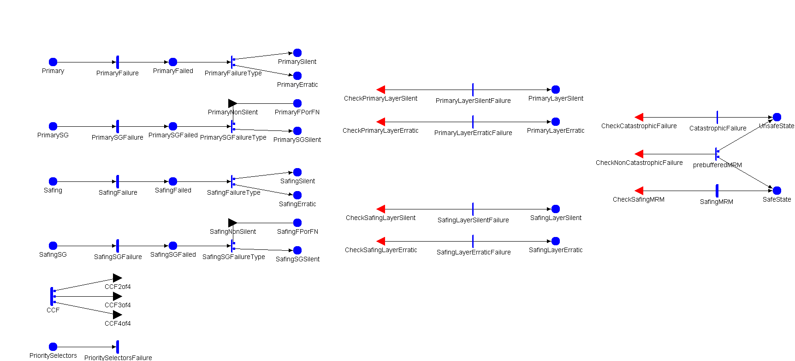

Model: LDCFModel

| Place Names | Initial Markings |
|---|---|
| Primary | |
| PrimaryErratic | |
| PrimaryFPorFN | |
| PrimaryFailed | |
| PrimaryLayerErratic | |
| PrimaryLayerSilent | |
| PrimarySG | |
| PrimarySGFailed | |
| PrimarySGSilent | |
| PrimarySilent | |
| PrioritySelectors | |
| SafeState | |
| Safing | |
| SafingErratic | |
| SafingFPorFN | |
| SafingFailed | |
| SafingLayerErratic | |
| SafingLayerSilent | |
| SafingSG | |
| SafingSGFailed | |
| SafingSGSilent | |
| SafingSilent | |
| UnsafeState | |
| Timed Activity: | CCF |
|---|---|
| Distribution Parameters | Ratefr_complex * (1-p_individual) |
| | |
| | |
| | case 1(1-p_individual-p_ccf3of4-p_ccf4of4)/(1-p_individual)case 2 p_ccf3of4/(1-p_individual)case 3 p_ccf4of4/(1-p_individual) |
| Timed Activity: | PrimaryFailure |
|---|---|
| Distribution Parameters | Ratefr_complex * p_individual |
| | |
| | |
| Timed Activity: | PrimarySGFailure |
|---|---|
| Distribution Parameters | Ratefr_complex * p_individual |
| | |
| | |
| Timed Activity: | PrioritySelectorsFailure |
|---|---|
| Distribution Parameters | Ratefr_simple * PrioritySelectors->Mark() |
| | |
| | |
| Timed Activity: | SafingFailure |
|---|---|
| Distribution Parameters | Ratefr_complex * p_individual |
| | |
| | |
| Timed Activity: | SafingMRM |
|---|---|
| Distribution Parameters | Rater_MRM |
| | |
| | |
| Timed Activity: | SafingSGFailure |
|---|---|
| Distribution Parameters | Ratefr_complex * p_individual |
| | |
| | |
| Instantaneous Activity: | PrimaryFailureType |
|---|---|
| | case 11-p_erraticcase 2 p_erratic |
| Instantaneous Activity: | PrimarySGFailureType |
|---|---|
| | case 1p_erraticcase 2 1-p_erratic |
| Instantaneous Activity: | SafingFailureType |
|---|---|
| | case 11-p_erraticcase 2 p_erratic |
| Instantaneous Activity: | SafingSGFailureType |
|---|---|
| | case 1p_erraticcase 2 1-p_erratic |
| Instantaneous Activity: | prebufferedMRM |
|---|---|
| | case 11-p_MRMcase 2 p_MRM |
| Instantaneous Activities Without Cases: |
|---|
| CatastrophicFailure |
| PrimaryLayerErraticFailure |
| PrimaryLayerSilentFailure |
| SafingLayerErraticFailure |
| SafingLayerSilentFailure |
| Input Gate: | CheckCatastrophicFailure |
|---|---|
| | SafeState->Mark()+UnsafeState->Mark()==0 && (PrimaryLayerErratic->Mark()==1 || PrimaryLayerSilent->Mark()+SafingLayerErratic->Mark()==2) |
| | ; |
| Input Gate: | CheckNonCatastrophicFailure |
|---|---|
| | SafeState->Mark()+UnsafeState->Mark()==0 && (PrioritySelectors->Mark()==0 || SafingLayerSilent->Mark()+PrimaryLayerSilent->Mark()==2) |
| | ; |
| Input Gate: | CheckPrimaryLayerErratic |
|---|---|
| | PrimaryLayerSilent->Mark()+PrimaryLayerErratic->Mark()==0 && PrimaryErratic->Mark()+PrimaryFPorFN->Mark()==2 |
| | ; |
| Input Gate: | CheckPrimaryLayerSilent |
|---|---|
| | PrimaryLayerSilent->Mark()+PrimaryLayerErratic->Mark()==0 && (PrimarySGSilent->Mark()+PrimarySilent->Mark()>=1 || PrimaryErratic->Mark()+PrimarySG->Mark()==2 || Primary->Mark()+PrimaryFPorFN->Mark()==2) |
| | ; |
| Input Gate: | CheckSafingLayerErratic |
|---|---|
| | SafingLayerSilent->Mark()+SafingLayerErratic->Mark()==0 && SafingErratic->Mark()+SafingFPorFN->Mark()==2 |
| | ; |
| Input Gate: | CheckSafingLayerSilent |
|---|---|
| | SafingLayerSilent->Mark()+SafingLayerErratic->Mark()==0 && (SafingSGSilent->Mark()+SafingSilent->Mark()>=1 || SafingErratic->Mark()+SafingSG->Mark()==2 || Safing->Mark()+SafingFPorFN->Mark()==2) |
| | ; |
| Input Gate: | CheckSafingMRM |
|---|---|
| | SafeState->Mark()+UnsafeState->Mark()==0 && Safing->Mark()+SafingSG->Mark()==2 && PrimaryLayerSilent->Mark()==1 |
| | ; |
| Output Gate: | CCF2of4 |
|---|---|
| |
int a = (Primary->Mark() + Safing->Mark() == 2);
int b = (PrimarySG->Mark() + SafingSG->Mark() == 2);
int c = (PrimarySG->Mark() + Safing->Mark() == 2);
int d = (Primary->Mark() + SafingSG->Mark() == 2);
int g = (Safing->Mark() + SafingSG->Mark() == 2);
int f = (Primary->Mark() + PrimarySG->Mark() == 2);
int n = a + b + c + d + g + f;
int e = 6;
if (n) {
int r = rand() % n;
if (a && r-- == 0) e = 0;
else if (b && r-- == 0) e = 1;
else if (c && r-- == 0) e = 2;
else if (d && r-- == 0) e = 3;
else if (g && r-- == 0) e = 4;
else if (f && r-- == 0) e = 5;
}
if (e==0) { Primary->Mark()=0; Safing->Mark()=0; PrimaryFailed->Mark()=1; SafingFailed->Mark()=1; }
else if (e==1) { PrimarySG->Mark()=0; SafingSG->Mark()=0; PrimarySGFailed->Mark()=1; SafingSGFailed->Mark()=1; }
else if (e==2) { PrimarySG->Mark()=0; Safing->Mark()=0; PrimarySGFailed->Mark()=1; SafingFailed->Mark()=1; }
else if (e==3) { Primary->Mark()=0; SafingSG->Mark()=0; PrimaryFailed->Mark()=1; SafingSGFailed->Mark()=1; }
else if (e==4) { Safing->Mark()=0; SafingSG->Mark()=0; SafingFailed->Mark()=1; SafingSGFailed->Mark()=1; }
else if (e==5) { Primary->Mark()=0; PrimarySG->Mark()=0; PrimaryFailed->Mark()=1; PrimarySGFailed->Mark()=1; }
|
| Output Gate: | CCF3of4 |
|---|---|
| |
int a = (Primary->Mark() + PrimarySG->Mark() + Safing->Mark() == 3);
int b = (Primary->Mark() + PrimarySG->Mark() + SafingSG->Mark() == 3);
int c = (Primary->Mark() + Safing->Mark() + SafingSG->Mark() == 3);
int d = (PrimarySG->Mark() + Safing->Mark() + SafingSG->Mark() == 3);
int n = a + b + c + d;
int e = 4;
if (n) {
int r = rand() % n;
if (a && r-- == 0) e = 0;
else if (b && r-- == 0) e = 1;
else if (c && r-- == 0) e = 2;
else if (d && r-- == 0) e = 3;
}
if (e==0) { Primary->Mark()=0; PrimarySG->Mark()=0; Safing->Mark()=0; PrimaryFailed->Mark()=1; PrimarySGFailed->Mark()=1; SafingFailed->Mark()=1; }
else if (e==1) { Primary->Mark()=0; PrimarySG->Mark()=0; SafingSG->Mark()=0; PrimaryFailed->Mark()=1; PrimarySGFailed->Mark()=1; SafingSGFailed->Mark()=1; }
else if (e==2) { Primary->Mark()=0; SafingSG->Mark()=0; Safing->Mark()=0; PrimaryFailed->Mark()=1; SafingSGFailed->Mark()=1; SafingFailed->Mark()=1; }
else if (e==3) { SafingSG->Mark()=0; PrimarySG->Mark()=0; Safing->Mark()=0; SafingSGFailed->Mark()=1; PrimarySGFailed->Mark()=1; SafingFailed->Mark()=1; }
|
| Output Gate: | CCF4of4 |
|---|---|
| |
if (PrimarySG->Mark()+SafingSG->Mark()+Primary->Mark()+Safing->Mark()==4)
{
PrimarySG->Mark()=0;
SafingSG->Mark()=0;
Primary->Mark()=0;
Safing->Mark()=0;
PrimarySGFailed->Mark()=1;
SafingSGFailed->Mark()=1;
PrimaryFailed->Mark()=1;
SafingFailed->Mark()=1;
}
|
| Output Gate: | PrimaryNonSilent |
|---|---|
| |
if (PrimarySilent->Mark()==1)
{
PrimarySG->Mark()=1;
}
else
{
PrimaryFPorFN->Mark()=1;
}
|
| Output Gate: | SafingNonSilent |
|---|---|
| |
if (SafingSilent->Mark()==1)
{
SafingSG->Mark()=1;
}
else
{
SafingFPorFN->Mark()=1;
}
|
| | | | | | | | |
|---|---|---|---|---|---|---|---|
| fr_complex | double | Fixed | 1.0E-5 | - | - | - | - |
| fr_simple | double | Fixed | 1.0E-6 | - | - | - | - |
| p_MRM | double | Manual | [0.75, 0.85, 0.95] | - | - | - | - |
| p_ccf3of4 | double | Fixed | 0.015 | - | - | - | - |
| p_ccf4of4 | double | Fixed | 0.01 | - | - | - | - |
| p_erratic | double | Manual | [0.1, 0.3, 0.5] | - | - | - | - |
| p_individual | double | Manual | [0.8, 0.875, 0.95] | - | - | - | - |
| r_MRM | double | Fixed | 6.0 | - | - | - | - |
| Performance Variable Model: LDCFReward | ||
|---|---|---|
| Top Level Model Information | Child Model Name | LDCFModel |
| Model Type | SAN Model | |
| Performance Variable : p_safestate | |||
|---|---|---|---|
| Affecting Models | LDCFModel | ||
| Impulse Functions | |||
| Reward Function | (Reward is over all Available Models)if (LDCFModel->SafeState->Mark()==1) return 1; | ||
| Simulator Statistics | Type | Instant of Time | |
| Options | Estimate Mean | ||
| Include Lower Bound on Interval Estimate | |||
| Include Upper Bound on Interval Estimate | |||
| Estimate out of Range Probabilities | |||
| Confidence Level is Relative | |||
| Parameters | Start Time | 5000.0,15000.0,25000.0,35000.0, | |
| Confidence | Confidence Level | 0.95 | |
| Confidence Interval | 0.1 | ||
| Performance Variable : p_unsafestate | |||
|---|---|---|---|
| Affecting Models | LDCFModel | ||
| Impulse Functions | |||
| Reward Function | (Reward is over all Available Models)if (LDCFModel->UnsafeState->Mark()==1) return 1; | ||
| Simulator Statistics | Type | Instant of Time | |
| Options | Estimate Mean | ||
| Include Lower Bound on Interval Estimate | |||
| Include Upper Bound on Interval Estimate | |||
| Estimate out of Range Probabilities | |||
| Confidence Level is Relative | |||
| Parameters | Start Time | 5000.0,15000.0,25000.0,35000.0, | |
| Confidence | Confidence Level | 0.95 | |
| Confidence Interval | 0.1 | ||
| Performance Variable : p_safestate_steadystate | |||
|---|---|---|---|
| Affecting Models | LDCFModel | ||
| Impulse Functions | |||
| Reward Function | (Reward is over all Available Models)if (LDCFModel->SafeState->Mark()==1) return 1; | ||
| Simulator Statistics | Type | Steady State | |
| Options | Estimate Mean | ||
| Include Lower Bound on Interval Estimate | |||
| Include Upper Bound on Interval Estimate | |||
| Estimate out of Range Probabilities | |||
| Confidence Level is Relative | |||
| Parameters | Initial Transient | 0.0 | |
| Batch Size | 1.0 | ||
| Confidence | Confidence Level | 0.95 | |
| Confidence Interval | 0.1 | ||
| Performance Variable : p_unsafestate_steadystate | |||
|---|---|---|---|
| Affecting Models | LDCFModel | ||
| Impulse Functions | |||
| Reward Function | (Reward is over all Available Models)if (LDCFModel->UnsafeState->Mark()==1) return 1; | ||
| Simulator Statistics | Type | Steady State | |
| Options | Estimate Mean | ||
| Include Lower Bound on Interval Estimate | |||
| Include Upper Bound on Interval Estimate | |||
| Estimate out of Range Probabilities | |||
| Confidence Level is Relative | |||
| Parameters | Initial Transient | 0.0 | |
| Batch Size | 1.0 | ||
| Confidence | Confidence Level | 0.95 | |
| Confidence Interval | 0.1 | ||